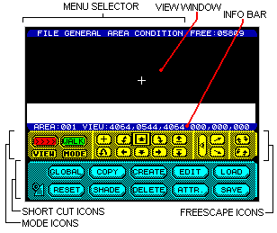

The Main Screen (see figure 1) is divided into five main areas:
The 3D Construction Kit is designed to be user-friendly with icons and pull-down menus enabling the user to quickly understand the working environment.
Editor functions can be selected in one of two main ways:
Upon loading the program you will see the Main Screen (Figure 1).
A box-shaped cursor will appear over one of the icons in the centre of the screen. This cursor highlights the currently selected icon. Pressing up, down, left or right on the joystick allows you to move the cursor around the screen from icon to icon. Pressing fire on the joystick activates the icon. For example: If the cursor is over the MODE icon then the mode will change. Moving the cursor above the top row of icons activates the MENU BAR.
THE MENU BAR consists of a series of headings at the top of the screen such as FILE. One heading is highlighted at any time. Pressing left or right on the joystick moves to the other headings. Pressing down on the joystick moves the cursor back onto the icons. Pressing fire over a heading will make a list of options (known as a menu) appear in the View window and the highlight will move to the first of these options. For example:
In the FILE menu there are options for LOAD and SAVE (there may be others depending on which version of the Kit you are using).
By moving the joystick up or down you may move the highlight to the option that you want or you may leave that menu by moving the highlight above the first option in the list. Pressing fire will select the option.

Below the Menu Selector you will see the main VIEW window. This area is always used to display the current FREESCAPE view.
Below the VIEW window is the INFORMATION BAR. This initially reads AREAO01 VIEW 4064,0544,4064 000,000,000 (This may vary depending on the type of computer used). This shows the current area, your present viewpoint co-ordinates (shown as X,Y,Z), and the angle of view (yaw, pitch and roll). When in edit mode this line will change to read the object name you are editing, its position in the environment and its size.
Below the Information Bar you will see a series of icons. These are the MODE and FREESCAPE icons. The MODE icons are on the left of the screen. The VIEW icon is very useful. Whenever selected, the editor's VIEWpoint of the environment will cycle through North, South, East, West and Top View. Alongside this you will see an icon called MODE. Mode cycles between WALK, FLY l and FLY 2.